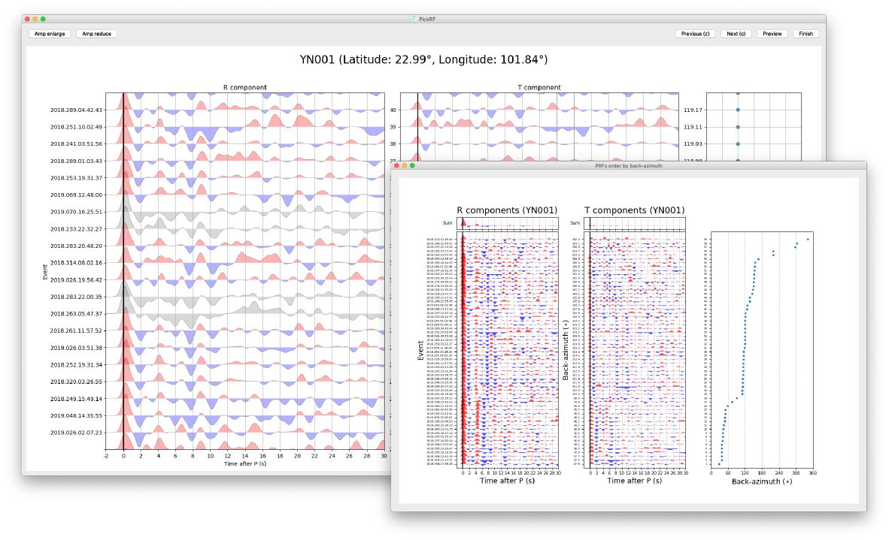

Seispy Documentation¶


Seispy is a Python module for processing seismological data and calculating Receiver Functions. The advanced functions are available to improve the Obspy.
I have been writing Seispy when I was a master student. At first, I wanted to calculate Receiver Functions in Python, but there is no suitable toolkit. Fortunately, The Obspy provided mounts of APIs for processing seismic data, so I ported codes for calculating Receiver Functions from Matlab to Python. Today increased functions have been added to Seispy to further process seismic data over than Obspy.
{kind=link}
Libraries¶
seispy.distaz: Calculate distance and azimuth (by the lithospheric seismology program at USC).seispy.geo: Tiny codes of geophysics.seispy.bootstrap: Bootstrap confidence interval estimation (by scikits-bootstrap)seispy.decon: Functions of deconvolution transferred from iwbailey/processRFmatlab includingIterative time domain deconvolution method (Ligorría and Ammon 1999 BSSA).
Water level frequency domain deconvolution method (CJ. Ammon 1991 BSSA)
seispy.rf: Procedure for RF calculation. The functions ofmatch_eq,search_eqinvokedobspy.core.UTCDateTimeandobspy.clientsfrom the Obspy.seispy.eq: RF processing for each event, which invokedobspy.io.sac,obspy.signal,obspy.taupandobspy.core.Streamfrom the Obspy.seispy.rfcorrect: Subsequent process of RFs including moveout correction and time to depth conversion (1D and 3D) (see Xu et al., 2018 EPSL)seispy.ccpprofile: CCP stacking along a profile.seispy.ccp3d: 3-D CCP stacking with extracting depth D410 and D660.
Getting Started:
Examples:
Configurations & Commands:
API Documentation:
- Module Index
- RF package
- Hk package
- CCP package
- GUI package
- seispy package
- seispy.bootstrap module
- seispy.ccpprofile module
- seispy.cc3d module
- seispy.ccppara module
- seispy.decon module
- seispy.distaz module
- seispy.eq module
- seispy.geo module
- seispy.get_cpt module
- seispy.hk module
- seispy.hkpara module
- seispy.io module
- seispy.mccc module
- seispy.para module
- seispy.pickfigure module
- seispy.pickui module
- seispy.plotR module
- seispy.plotRT module
- seispy.psrayp module
- seispy.rf module
- seispy.rf2depth_makedata module
- seispy.rfani module
- seispy.rfcorrect module
- seispy.setuplog module
- seispy.signal module
- seispy.updatecatalog module
- Module contents
Indices and tables¶
References¶
Ammon C J. The isolation of receiver effects from teleseismic P waveforms[J]. Bulletin-Seismological Society of America, 1991, 81(6): 2504-2510.
Krischer L, Megies T, Barsch R, et al. ObsPy: A bridge for seismology into the scientific Python ecosystem[J]. Computational Science & Discovery, 2015, 8(1): 014003.
Ligorría J P, Ammon C J. Iterative deconvolution and receiver-function estimation[J]. Bulletin of the seismological Society of America, 1999, 89(5): 1395-1400.
Xu M, Huang H, Huang Z, et al. Insight into the subducted Indian slab and origin of the Tengchong volcano in SE Tibet from receiver function analysis[J]. Earth and Planetary Science Letters, 2018, 482: 567-579.